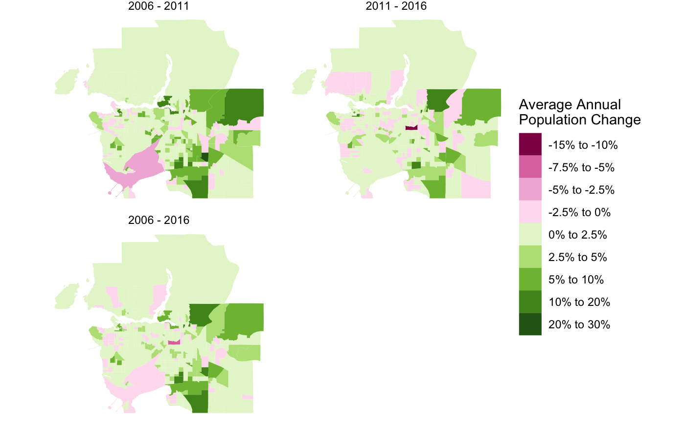
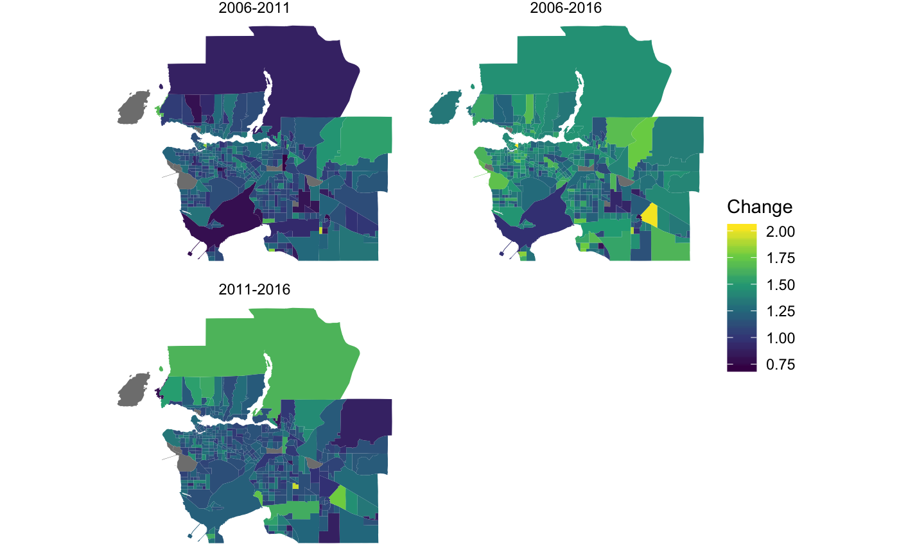

data <- do.call(rbind,lapply(c("2006","2011","2016"),function(year){
var <- paste0("Population ",year)
get_census(paste0("CA",substr(year,3,4)),regions=list(CMA="59933"),
geo_format = 'sf',level="CT",quiet=TRUE) %>%
select(GeoUID,Population,Households,Dwellings, geometry) %>%
mutate(Year=year)
})) data_2006 <- data %>% filter(Year=="2006")
data_2011 <- tongfen_ct(data_2006,data %>% filter(Year=="2011"),"Population")
data_2016 <- tongfen_ct(data_2006,data %>% filter(Year=="2016"),"Population")
geometric_average <- function(x,n){sign(x) * (exp(log(1+abs(x))/n)-1)}
plot_data <- data_2006 %>%
rename(`Population 2006`=Population) %>%
left_join(data_2011 %>% as.data.frame %>% select(GeoUID,Population) %>% rename(`Population 2011`=Population),by="GeoUID") %>%
left_join(data_2016 %>% as.data.frame %>% select(GeoUID,Population) %>% rename(`Population 2016`=Population),by="GeoUID") %>%
mutate(`2006 - 2011`=geometric_average((`Population 2011`-`Population 2006`)/`Population 2006`,5),
`2011 - 2016`=geometric_average((`Population 2016`-`Population 2011`)/`Population 2011`,5),
`2006 - 2016`=geometric_average((`Population 2016`-`Population 2006`)/`Population 2006`,10)) %>%
gather(key="Period",value="Population Change",c("2006 - 2011","2011 - 2016","2006 - 2016")) %>%
mutate(Period=factor(Period,levels=c("2006 - 2011","2011 - 2016","2006 - 2016")))breaks = c(-0.15,-0.1,-0.075,-0.05,-0.025,0,0.025,0.05,0.1,0.2,0.3)
labels = c("-15% to -10%","-10% to -7.5%","-7.5% to -5%","-5% to -2.5%","-2.5% to 0%","0% to 2.5%","2.5% to 5%","5% to 10%","10% to 20%","20% to 30%")
colors <- RColorBrewer::brewer.pal(10,"PiYG")
ggplot(plot_data %>% mutate(c=cut(`Population Change`,breaks=breaks, labels=labels)),aes(fill=c)) +
geom_sf(size=0) +
scale_fill_manual(values=set_names(colors,labels)) +
facet_wrap("Period",ncol=2) +
ggplot2::theme_void() +
ggplot2::theme(panel.grid.major = ggplot2::element_line(colour = "transparent")) +
labs(fill="Average Annual\nPopulation Change")
Using the general estimate
data_2006 <- data %>% filter(Year=="2006")
data_2011 <- tongfen_estimate(data_2006,data %>% filter(Year=="2011"),"Population","GeoUID")
data_2016 <- tongfen_estimate(data_2006,data %>% filter(Year=="2016"),"Population","GeoUID")
geometric_average <- function(x,n){sign(x) * (exp(log(1+abs(x))/n)-1)}
plot_data <- data_2006 %>%
rename(`Population 2006`=Population) %>%
left_join(data_2011 %>% as.data.frame %>% select(GeoUID,Population) %>% rename(`Population 2011`=Population),by="GeoUID") %>%
left_join(data_2016 %>% as.data.frame %>% select(GeoUID,Population) %>% rename(`Population 2016`=Population),by="GeoUID") %>%
mutate(`2006 - 2011`=geometric_average((`Population 2011`-`Population 2006`)/`Population 2006`,5),
`2011 - 2016`=geometric_average((`Population 2016`-`Population 2011`)/`Population 2011`,5),
`2006 - 2016`=geometric_average((`Population 2016`-`Population 2006`)/`Population 2006`,10)) %>%
gather(key="Period",value="Population Change",c("2006 - 2011","2011 - 2016","2006 - 2016")) %>%
mutate(Period=factor(Period,levels=c("2006 - 2011","2011 - 2016","2006 - 2016")))breaks = c(-0.15,-0.1,-0.075,-0.05,-0.025,0,0.025,0.05,0.1,0.2,0.3)
labels = c("-15% to -10%","-10% to -7.5%","-7.5% to -5%","-5% to -2.5%","-2.5% to 0%","0% to 2.5%","2.5% to 5%","5% to 10%","10% to 20%","20% to 30%")
colors <- RColorBrewer::brewer.pal(10,"PiYG")
ggplot(plot_data %>% mutate(c=cut(`Population Change`,breaks=breaks, labels=labels)),aes(fill=c)) +
geom_sf(size=0) +
scale_fill_manual(values=set_names(colors,labels)) +
facet_wrap("Period",ncol=2) +
ggplot2::theme_void() +
ggplot2::theme(panel.grid.major = ggplot2::element_line(colour = "transparent")) +
labs(fill="Average Annual\nPopulation Change")
rent_variables <- c("v_CA16_4901", "v_CA11N_2292","v_CA06_2050")
regions=list(CMA="59933")
rent_data <- get_tongfen_census_ct(regions=regions,vectors=rent_variables,geo_format = 'sf')library(tidyverse)
library(sf)
plot_data <- rent_data %>%
mutate(`2006-2011`=v_CA11N_2292/v_CA06_2050,
`2011-2016`=v_CA16_4901/v_CA11N_2292,
`2006-2016`=v_CA16_4901/v_CA06_2050) %>%
gather(key="Period",value="Change",c("2006-2011","2011-2016","2006-2016"))
ggplot(plot_data,aes(fill=Change)) +
geom_sf(size=0) +
ggplot2::theme_void() +
ggplot2::theme(panel.grid.major = ggplot2::element_line(colour = "transparent")) +
scale_fill_viridis_c() +
facet_wrap("Period",ncol=2)
Aggregating up data across regions
Another application is simply aggregating up variables for a selection of regions from a single census. Suppose we want to understand the share of renters in Old Toronto, as well as the share of renter households spending more than 30% of income on housing.
(This functionality should get integrated into get_old_toronto_data)
library(cancensusHelpers)
vectors <- c("v_CA16_4836","v_CA16_4838","v_CA16_4899")
meta=meta_for_vectors(vectors,also_for_first = TRUE)
old_toronto <- get_old_toronto_data("CA16",vectors=meta$variable,also_new_toronto = FALSE)
old_toronto <- aggregate_data_with_meta(old_toronto,bind_rows(meta,tibble(variable=c("Population","Dwellings","Households")))) %>%
mutate(Total=v_CA16_4836,Renters=v_CA16_4838,rent_poor=v_CA16_4899/100) %>%
mutate(rent_share=Renters/Total)56% of Old Toronto households rent, 47% of which are shelter cost burdened.